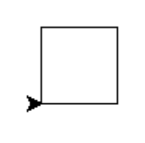
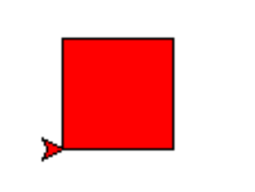

Rysowanie w Pythonie
Michał Pilarski
W Pythonie można rysować różne figury. Do rysowania w Pythonie używamy modułu turtle (po polsku żółw). Żeby móc używać taki moduł, należy napisać taką linię kodu:
PODSTAWOWE INSTRUKCJE PYTHONA
| Kod Pythona | Wyjaśnienie |
|---|---|
| fd(x) | Przesuń się o x kroków do przodu |
| bk(x) | Przesuń się o x kroków do tyłu |
| lt(x) | Skręć w lewo o x stopni |
| rt(x) | Skręć w prawo o x stopni |
| pu() | Podnieś pisak |
| pd() | Opuść pisak |
| color("black", "red") | Ustaw kolor linii na czarny i ustaw kolor wypełnienia na czerwony |
| begin_fill() | Rozpocznij wypełnianie kształtu |
| end_fill() | Zakończ wypełnianie kształtu |
Przykład rysunku w Pythonie:
Rezultat:
W Pythonie można też skrócić kod, używając pętli. Lepiej korzystać z pętli, wtedy można mniej pisać. Powyższy kod można zapisać z użyciem pętli w następujący sposób:
Kwadrat z czerwonym wypełnieniem:
Rezultat:
